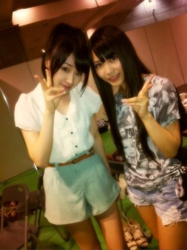
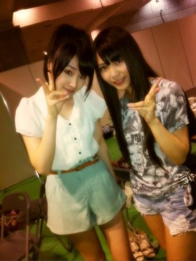

2012/0714Sat（´-`）.｡oO(かずみん×79!!
こんばんは(*^^*)
かずみだ〜ぜぜぜぜぜーい！
いつも応援ありがとうございます！
前回また番号間違えちゃって
ごめんなさい(T_T)
みなさんからの
沢山のコメントが私の宝物です\(//∇//)\
今日は大阪で全国握手会がありました！
大阪でおいでシャンプーツアー最後。
みなさんのおかげで
とても良いファイナルになりました！
私はライブで話すのは凄く苦手で、
いつも不安になってしまうのですが、
温かい声援に助けられ楽しくステージに
立つことができました！
本当にありがとうございました(*^_^*)
握手会はまたまた仲良しの
飴と鞭コンビ♪

この前も原宿の食べ放題に
行きました(^^)
ずっと計画してたから
行けてよかったです♪
陽菜ちゃんと私って
意外な組み合わせですかね^^;？
陽菜ちゃんはとにかく顔に似合わず
ガジ面白いんですよ！
だから一緒にいると会話が
とぎれません(⌒▽⌒)
そんな陽菜ちゃんとペアの
握手会も楽しかったです！
あみは他のレーンになりましたが
また今度一緒にできたらいいな♪
握手に来てくれたみなさん、
本当にありがとうございました！
-------
最近、髪の毛をくくるのに
ハマってて、
この前もツインテールに
してました( ´ ▽ ` )ﾉ
今日はポニーでしたが、
最初ツインにしようと思ってて
陽菜ちゃんにどお？と聞いてみたら
『似合わない。』
ときっぱりいわれたのでやめました♪笑
さすが飴と鞭のムチ担当！
みなみにはももちじゃなくて
かずちだね〜と可愛い返しを
いただきました(*^^*)
みなみも、ももちさんが大好きなんです♪
私も意外とリボンとかふわふわした物とか
可愛い物が好きなので...笑
似合うようになりたいです(>_<)
ガジ頑張ります！
--------
それでは今日はこの辺で。
今日もみなさんの笑顔が沢山見れて
よかったです。
明日もいい一日になりますように...♪
おやすみなさい...☆
かずみだ〜ぜぜぜぜぜーい！
いつも応援ありがとうございます！
前回また番号間違えちゃって
ごめんなさい(T_T)
みなさんからの
沢山のコメントが私の宝物です\(//∇//)\
今日は大阪で全国握手会がありました！
大阪でおいでシャンプーツアー最後。
みなさんのおかげで
とても良いファイナルになりました！
私はライブで話すのは凄く苦手で、
いつも不安になってしまうのですが、
温かい声援に助けられ楽しくステージに
立つことができました！
本当にありがとうございました(*^_^*)
握手会はまたまた仲良しの
飴と鞭コンビ♪

この前も原宿の食べ放題に
行きました(^^)
ずっと計画してたから
行けてよかったです♪
陽菜ちゃんと私って
意外な組み合わせですかね^^;？
陽菜ちゃんはとにかく顔に似合わず
ガジ面白いんですよ！
だから一緒にいると会話が
とぎれません(⌒▽⌒)
そんな陽菜ちゃんとペアの
握手会も楽しかったです！
あみは他のレーンになりましたが
また今度一緒にできたらいいな♪
握手に来てくれたみなさん、
本当にありがとうございました！
-------
最近、髪の毛をくくるのに
ハマってて、
この前もツインテールに
してました( ´ ▽ ` )ﾉ
今日はポニーでしたが、
最初ツインにしようと思ってて
陽菜ちゃんにどお？と聞いてみたら
『似合わない。』
ときっぱりいわれたのでやめました♪笑
さすが飴と鞭のムチ担当！
みなみにはももちじゃなくて
かずちだね〜と可愛い返しを
いただきました(*^^*)
みなみも、ももちさんが大好きなんです♪
私も意外とリボンとかふわふわした物とか
可愛い物が好きなので...笑
似合うようになりたいです(>_<)
ガジ頑張ります！
--------
それでは今日はこの辺で。
今日もみなさんの笑顔が沢山見れて
よかったです。
明日もいい一日になりますように...♪
おやすみなさい...☆
2012/07/14 23:18


コメント(436)
またきてね♪
と、叫んでみました(笑)。
おやすみなさい♪
全握にめっちゃ行きたかったなーo(^o^)o
さすがに大阪は遠くて行けないや…。
かずみんに会えなくて、もう枯れ果てるわ…。
へばっまずな(^-^)/~~
全握お疲れさま！
楽しめたみたいで良かった！
ツイン似合ってるよー。
かずみん！今日はありがとう！！
まさかプロポーズ受けてくれるとは思わんかったわｗｗ
また今度、個別行くね！
かずみんがんばれー！
握手会お疲れ様、いつも応援してます♪(｡•ﻌ•｡)
大阪でおいしいもの食べれたぁ？
かずみんのトーク面白いじゃん。
↑
じゃんは埼玉県あたりの方言です。
いつも笑っちゃうよ
かずみん かわいい。(照)
一実さんも十分面白いから‥(〃'▽'〃)
今日の握手会も行きたかったから(; ;)
一実さん好きやで(〃'▽'〃)
リボンも最高に可愛い。
ぐるぐるカーテンの全握のペアだったよね、かずみんと陽菜。
だからかもしれないけど意外に感じない(^^)
ナイスペアだと思うよ！
かずみんのツインもポニーも見たことないんだよなぁ…
デコ出しも！
ぜひ今度握手会で見せてくだされ(>_<)
飴と鞭コンビだったんだ～
行きたかったなぁ(T-T)
一実さんと陽菜の組み合わせ意外だけど好きだわぁ(*￣▽￣*)
今度握手会でツインテールやってよ(*^_^*)見てみたい♪
じゃおやすみ♪
ポニテが一番好きなオレンジです(照)
ゆうて、かずみんの髪型はなんでも好きだよ(^o^)/
ツインのかずち(笑)も可愛いし最高(照)
原宿とかオシャンティー(*_*)
俺4,5回しか行ったことないよ(笑)
川後ちゃんとペア多いよね♪
羽生の時もそうだったしね(^o^)/
大阪行きたかった(ToT)
ミニ握手またあるといいな♪
関東なら行くからね(*^^*)
それよりライヴもほしい(ToT)
ゆっくり休んでね(^^)d
それじゃあこの辺で！
今日はお疲れ様(*^^*)
明日も頑張ろう
愛羅武勇
暑くなかった？？？
かずみん足細ーい＼(^o^)／
意外な組み合わせなきがするよ(^^)
あめとむちｗｗｗｗ
ゆっくりやすんで♪
ばいちゃ
おやすみなさい..(u_u)。
かわいすぎて、
大好きになっちゃっていいですか？
…
かずみんが大好きです←
生かずみだ〜ぜぜぜぜぜーいを初めて見た！
ただ、タイミングを逃したんで
次回からも是非！！
今日はありがとう！
飴と鞭コンビ最高やな(=´∀｀)人(´∀｀=)
次は3rdかな？
また、楽しみにしてまーす\(//∇//)\
かずみんポニー( •ॢ◡-ॢ)-♡
カワイイだ〜ぜぜぜぜぜーい！
全握お疲れさま。
改めて見ると、川後選手キレイやねー。
あれで中学生って、末恐ろしいよね。
今日一実さんレーン行ってみて、ホントに二人仲いいんやなって思ったよ。
また今度、二人同じレーンがあるといいね。
かずみんにだってツインテール似合うよ(^o^)v
今度はしてね！
写メ可愛いすぐる
レッスン頑張ってくださいd(⌒ー⌒)!
バイシクルの全握初参戦しますのでよろしくね(^0^)/
つーか何回番号間違えるんかーい（笑）
まぁそこがまたかずみんらしいわ！
かずちとかww
ツインよりポニーのがイイね♪♪
リボンはめっちゃ似合ってるよ☆
ガジ頑張れー(⌒-⌒; )
では、またねん♪
(*^-^)ノ
全握お疲れちゃんね！
ってか、かずみんはトーク上手じゃん！
いつかの乃木どこでも、ななみんが誉めてなかった？
(。-∀-)b♪
で、かずみんのツイン可愛いと思うけどな！
(￣▽￣)b
陽菜ちゃんは激カラだ！
f(^_^;
でも、そんなトコが陽菜ちゃんの魅力なんかな？
じゃ、今日はゆっくり休んでな！
またね！
(´・ω・`)/~~
行きたかったけど、大事なバスケ試合があって、、
でもスタートメンバーで出たのに、自身発の０得点でしかも負けた。かなり凹んでる、笑
かずみんと握手して癒されたかったなー
かずみんは剣道とか乃木坂で、うまく結果だせなくて凹んでるときとかどーやってモチベーションあげんのー？
てか、今日券と時間あんまなかったから1回しか行けんくてごめんね
しかも一実が何か喋ろうとしてた気がするんだけど…
何だったのかな
まあ個別取ってたくさん話しようぜぜぜぜぜぜーい
かずみんみん( ｀.∀´）y-
相変わらずスタイルイイナー(・∀・)
今日はオシカレ
自分はまだ仕事してるにょん(´・ω・｀)←この顔文字の眉毛かずみんに似てるよね？ｗｗ
バイバイ
かずみだ〜ぜぜぜぜぜーい！を今週もできて最高でしたｗ
ライブも盛り上がれて幸せです。
握手ではちゃんと覚えててくれて嬉しかったよ～
写真撮ってる？
メンバーのいい表情待ってますよ。
また握手しましょう！
では、おやすみなさーい！
大阪の握手会、お疲れ様でした！
さぁ、次は「走れ！Bicycle」のイベントに向けて頑張って
いくんだぜぜぜぜぜぇ～い！
かずみんのＭＣはポンコツ具合がちょうどいいんですョ！
だから気にせずどんどんしゃべっていきましょう。
暑くなってきましたので身体に気をつけて下さいね
でもツインも似合ってるよ！
こんばんは=^・^=
今日は大阪お疲れ様でした!!
かずみんの話は上手い下手じゃ表現できない魅力があるんだよね(*^^*)
そして今日初めてかずみんと握手した人は、テレビとかではわからない魅力を感じたと思います。
ツインテール可愛いと思うけどなぁ～(^^)陽菜チャンのムチ厳しいね(*^^*)
運営スタッフブログのかずみんの笑顔みたら、今日充実した１日になったのよくわかった(*^^*)
最後に
かずみだぜぜぜぜぜ～ぃ!!
一緒にできますように(^^)
忙しい毎日体調に気をつけてがんばってね!!
めっちゃ応援してるからねo(^-^)o
またね(*・ｘ・)ノ~~~♪
初コメだよー(^-^)/
かずみんこんばんわ( ´ ▽ ` )ﾉ
握手会お疲れさま！
いきたかった～(T ^ T)
大分からやけんなぁ。
かずみんと会いたかった～(ｰｰ;)
よし！サードは遠征しよう！
ということで東京行くよー(^O^)／
ちょっと遅いけど
乃木どこ見たよー(^-^)
かずみん怖い話するの下手すぎな（笑）
多分ちゃんと話せば怖いのにっち思った！
しかも下手なのに気付くの遅すぎっ！！
まぁそんなとこがかずみんのいいとこ(^O^)／
CDTVみてるあっきーは今テンションかずみんo(^▽^)o
ということで
乃木坂がでるの楽しみにしてるよー(^O^)／
またね～
あっきーより
ひなちゃんが、かずみんのツイン「似合わない」コメント、ひなちゃんらしくて面白いね。
ナイスコンビだと思う二人。
なんかいろいろガジ頑張って。
あっそうだ、今月末の札幌のミニ握手、たぶん行くから、ぜぜぜぜぜーいってやってね。
やっぱりライブはいいね♪
3rdも聞けたし、ハウスも見れたし～
かずみんはＭＣ得意だとおもっとったけど・・・ｗ
今日は、たくさんお邪魔しました！ｗ
行きすぎかと思いつつ、やっぱり全部かずみんに会いにいっちゃいました！
名前わかるっていわれたのは、ガジうれしかったですよ☆
かずみん推し安定！！
おいシャン、あとは再来週の北海道がんばって！
そしたら、また3rdで会いましょう！！
個別ばっかで全握行ったことないから
３ｒｄは行きます！！
ツインも可愛いと思う！！
でも私はかずみんのお団子とポニーテール
が大好きかな*・ω・*
今日earth行ったらかずみんが日村さんに
買ってもらってたワンピが売ってて
買おうかものすごく迷ってた←
最近かずみんの影響で水色系の服が増えた♪
明日は志望校のオープンキャンパスに行ってきます！
かずみん体調に気を付けて笑顔でお仕事がんばってください！
今日東京から珍が
舞い降りてくるらしいデス(笑)
最近Ｍと盛り上がってますよ
ダンス覚えたり
教室で大騒ぎですよ(*^_^*)
これからも頑張って下さい！
_
お疲れ様(*^o^*)
今日めちゃ楽しかった♪
かずみんに名前と顔
覚えてもらえて
嬉しい限りです(^^)
早く個別に行きたいな♪
かずみんのツイン可愛い！
けど私はポニーテールのほうが
好きだな～⊂((・x・))⊃♡
かずみん、化粧変えた？
この写真いつもより大人っぽいです！
ななみより♪
今日はおつかれさま♪
いっぱい楽しめたのかな？
おれからも言おう
かずみん、、、似合ってないよ(--;)
でも、おだんごかな？
ちょー可愛い//
今日は行けんかったけど
サードは絶対行くけんな!!
待っちょってな♪
早く９月２日にならんかな～
今、指祭り見よん(*^^*)
かずみんおる？
あんまり映ってないよ;
パフォーマンスになったら映るかな？
楽しみにしちょくわ
ばいばーい
大分のりゅーせーより//
大阪お疲れ様～
やまちゃんの伝言以外に１回しかいけんくてごめんなぁ
ちょっと間あくけど、また会いに行くからヨロシク
ほなねﾉｼ
ツインテール可愛い！
俺的似合ってると
思う
今度ツインテールで
握手してほしい
今日はお疲れ様
(´・ω・`)
お疲れさま( ^^)/
大阪の握手会楽しそうだね！
ポニーテール似合ってるよ！
ツインは…うん……w
似合うようになるといいね(笑)
早く9月ならないかな！
それではお休みなさい。
かずみさんツインかわいいよ！！
生でツイン見てみたいよー
今日は大阪行けなかったので
早く歌って踊るかずみさんが見たいですヽ(・∀・)ノ
行きたかったけど、大事なバスケ試合があって、、
でもスタートメンバーで出たのに、自身発の０得点でしかも負けた。かなり凹んでる、笑
かずみんと握手して癒されたかったなー
かずみんは剣道とか乃木坂で、うまく結果だせなくて凹んでるときとかどーやってモチベーションあげんのー？
かずみんばんわ(*^o^*)
大阪全握お疲れ様！
行けなかったけど楽しめた？
よみうりの時も一緒だったよね
これは2人運命だなww
今日は今年初のお祭りいってきた！
どうだ～羨ましいだろ～
今年初のお祭りと花火を堪能しました
今はCDTVの乃木坂待機
ゆび祭りもあるけど部屋じゃ
見れないから録画！
でわでわこの辺で@(・●・)@
今日は東京の空の下から大阪全握の成功祈ってたよ(^-^)
確か高山、川後ペアってのは俺が最初生乃木坂に会ったひな祭りの日のよみうりランドでもそうだったんじゃ？
あの日あそこに行かなかったらアイドルのブログにコメントするってこともなかったと思うと感慨深いです(^^ゞ
おかげで休日も早起きさせられることが増えたけどね(笑)
コメントする